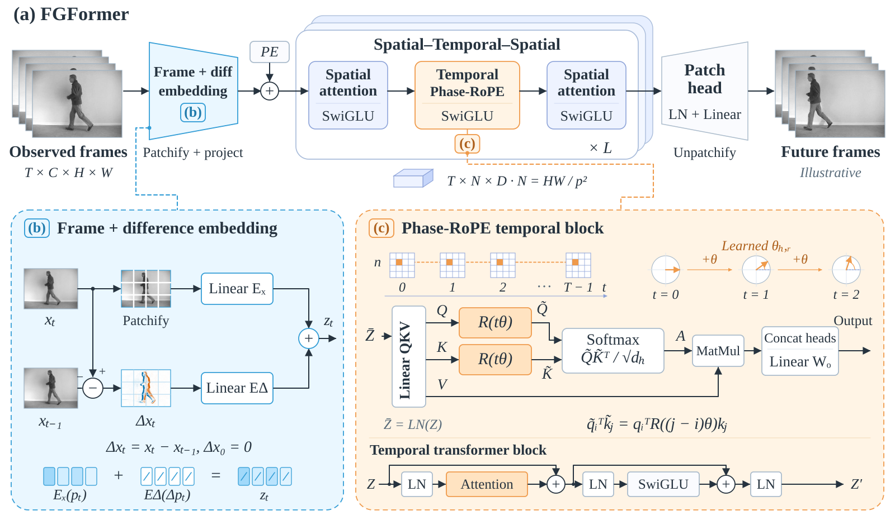
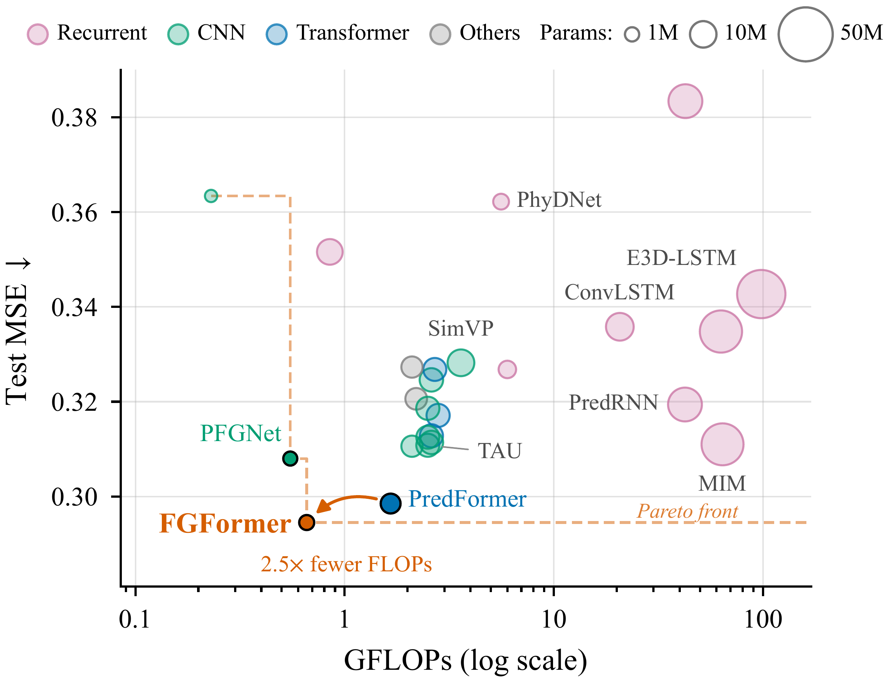
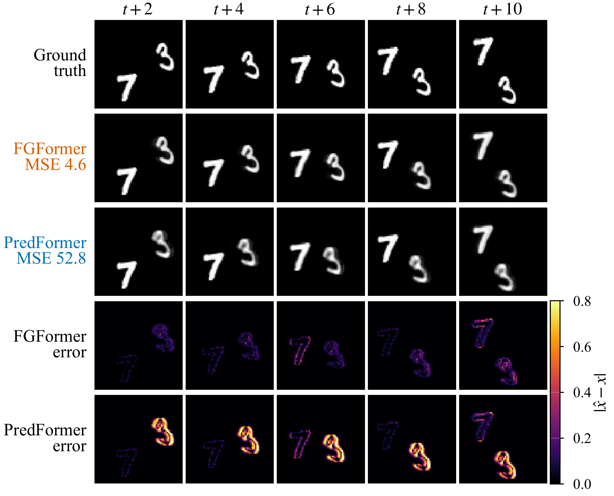

01 · 帧差分嵌入
原帧与一阶帧差分别经过线性映射，与绝对位置编码相加，在首次空间处理前显式提供变化信息。首帧的差分置零。
Δxₜ = xₜ − xₜ₋₁，Δx₀ = 0z = EₓP(x) + EΔP(Δx) + e
Frame-Gradient Phase Transformer
把帧间变化与相对时间信息引入 Transformer，以更小的模型完成时空预测。
视频预测需要从历史帧推断后续变化。独立帧嵌入与绝对位置编码使帧间差分、相对时间间隔仍需由模型隐式学习。FGFormer 在 PredFormer 的 Triplet-STS 骨干上加入两个轻量时间先验，分别作用于输入表示和时间注意力。

原帧与一阶帧差分别经过线性映射，与绝对位置编码相加，在首次空间处理前显式提供变化信息。首帧的差分置零。
Δxₜ = xₜ − xₜ₋₁，Δx₀ = 0z = EₓP(x) + EΔP(Δx) + e
按帧号旋转时间注意力中的 Q/K 通道对，V 保持不变。旋转项引入相对时间偏移；完整注意力仍结合内容和输入的绝对位置编码。主版本使用自由可学习频率。
q̃ᵢ = R(iθ)qᵢ，k̃ⱼ = R(jθ)kⱼq̃ᵢᵀk̃ⱼ = qᵢᵀR((j−i)θ)kⱼ
空间 → 时间 → 空间的 STS 层交替处理帧内结构与跨帧关系。匀速平移下的时间导数和线性相位演化为设计提供动机；模型学习的是特征表示中的旋转频率，并不估计物理运动速度。
两个组件在 Moving MNIST / KTH 上合计增加约 0.017M 参数，参数与 FLOPs 开销均低于骨干的 0.1%。整体计算量下降主要来自更浅或更窄的骨干配置。
与同代码、同配方和同种子重训的 PredFormer 比较，FGFormer 在 Moving MNIST 与 KTH 上降低平均 MSE；TaxiBJ 精度相当，计算量约为其 1/2.5。以下精度均为种子均值 ± 样本标准差。
| 数据集 | 模型 | MSE ↓ | MAE ↓ | SSIM ↑ | PSNR ↑ |
|---|---|---|---|---|---|
| Moving MNIST | PredFormer | 12.36 ± 0.57 | 44.55 ± 1.76 | 0.9720 ± 0.0027 | 27.23 ± 0.28 |
| FGFormer | 11.96 ± 0.46 | 43.25 ± 1.37 | 0.9739 ± 0.0010 | 27.43 ± 0.32 | |
| KTH | PredFormer | 46.01 ± 1.02 | 447.7 ± 8.3 | 0.8911 ± 0.0010 | 26.76 ± 0.05 |
| FGFormer | 43.82 ± 0.24 | 426.0 ± 2.2 | 0.8908 ± 0.0002 | 26.97 ± 0.01 | |
| TaxiBJ | PredFormer | 0.2985 ± 0.0288 | 14.53 ± 0.29 | 0.9852 ± 0.0010 | 39.92 ± 0.11 |
| FGFormer | 0.2945 ± 0.0121 | 14.44 ± 0.13 | 0.9856 ± 0.0010 | 39.99 ± 0.06 |
KTH 的 MSE、MAE 与 PSNR 改善，SSIM 为 0.8908（PredFormer 为 0.8911）。TaxiBJ 的结果体现精度与计算成本的平衡。
| 数据集 | FGFormer | PredFormer | 配置变化 |
|---|---|---|---|
| Moving MNIST | 19.2M / 12.4G | 25.5M / 16.5G | STS 层数 8 → 6 |
| KTH | 19.7M / 48.6G | 26.0M / 64.7G | STS 层数 8 → 6 |
| TaxiBJ | 2.53M / 0.659G | 6.40M / 1.66G | 宽度 256 → 160 |
各单元格为参数量 / FLOPs，使用 fvcore 统计单次前向、batch 1。KTH 每次预测 10 帧，完成 20 帧预测需要两次前向；表中为每次的计算量。这里展示模型计算量，未报告实测运行时间。

| 数据集 | 输入 → 预测 | 分辨率 | 训练轮数 | 种子数 |
|---|---|---|---|---|
| Moving MNIST | 10 → 10 帧 | 64 × 64 | 2000 epochs | 3 |
| KTH | 10 → 20 帧 | 128 × 128，灰度 | 100 epochs | 3 |
| TaxiBJ | 4 → 4 帧 | 32 × 32，双通道 | 200 epochs | 5 |
均使用最终 checkpoint，未按测试集择优。MSE / MAE 对每帧像素和通道求和，再对预测帧与样本平均；TaxiBJ MSE 为原始值，未乘 100。PSNR 使用浮点计算，单位 dB。
固定骨干深度、宽度、训练配方与种子，对两个组件做 2 × 2 消融。两组件分别改善骨干，组合在两数据集的四项指标上取得最好的种子均值。Moving MNIST 的这组消融训练 200 epochs，与主结果的 2000 epochs 区分呈现。
| 配置 | Moving MNIST · 200 ep | KTH · 100 ep |
|---|---|---|
| Backbone | 29.48 ± 1.16 | 46.23 ± 0.49 |
| + phase-RoPE | 25.43 ± 0.65 | 45.01 ± 0.32 |
| + 帧差分嵌入 | 23.73 ± 0.84 | 44.21 ± 1.30 |
| FGFormer · 两组件 | 22.67 ± 0.32 | 43.82 ± 0.24 |
定性对比展示一个指定测试序列中的结构与误差变化，帮助理解平均指标背后的预测表现。

论文在投，源码暂未公开。欢迎通过主页联系方式交流视频预测、时序表示与高效 Transformer 建模。